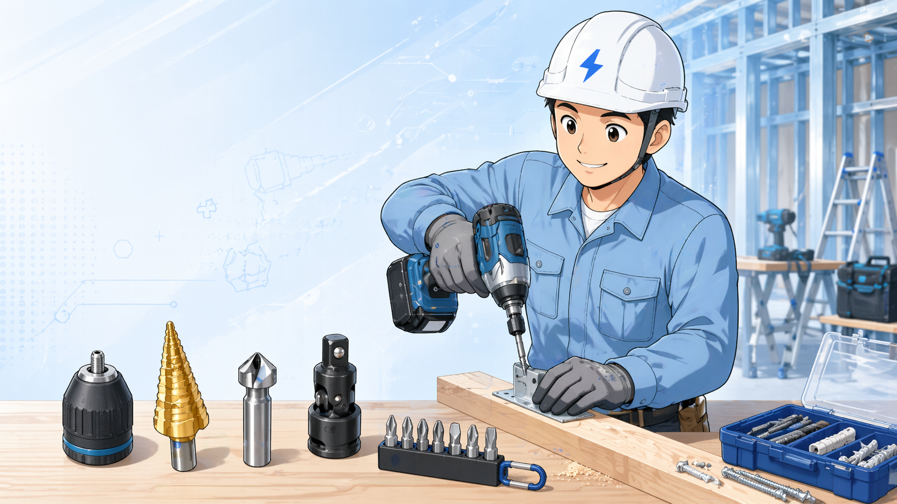

向いている人
- ドリルやインパクトは持っているが、先端工具をまだあまり揃えていない人
- 穴あけ後のバリ取りや仕上がりを良くしたい人
- ナット締めやビス作業をもう少し楽にしたい人
- 盤作業・器具付け・ラックまわりの作業がある人
穴あけ・仕上げ・締結・持ち替えを、もう少し楽にする周辺工具まとめ
ドリルドライバやインパクトドライバは、本体だけでもかなり便利です。
ただ、現場では先端工具やアダプタをうまく組み合わせると、穴あけ、面取り、ナット締め、ビット交換、小物管理までかなり作業しやすくなります。
このページでは、電気工事や制御盤まわりの作業で一緒に使いやすい周辺工具を、用途別に整理します。

最初に見るなら、ドリルチャック、ステップドリル、面取りカッター、下穴錐、ソケットアダプタ、ビットホルダーあたりからで十分です。作業の種類が増えてきたら、マグネットトレーやクイックキャッチャーもあると便利です。
ポイント
ドリルやインパクトは本体だけでなく、先端工具との組み合わせで使いやすさが変わります。まずは自分の作業で出番が多いものから見ると選びやすいです。
ドリルやインパクトは「本体の性能」も大事ですが、実際の現場では先端工具の組み合わせでできる作業が大きく変わります。 たとえば、穴を開けるだけならキリで足りますが、穴を広げる、仕上げる、ナットを締める、先端を素早く持ち替える、といった工程まで考えると必要な道具が増えていきます。
つまり周辺工具は、単なる追加購入ではなく「作業の流れを止めないための道具」です。 使う場面が多いものから順に足すことで、ムダなく使いやすい手元環境を作れます。
ステップドリル、面取りカッター、ソケットアダプタなどを使うと、同じドリル・インパクトでも作業の幅が広がります。 ただし、何でも一気に揃える必要はありません。 よく使うものから順番に足していく方が失敗しにくいです。

既存の工具カードを残しながら、用途が一目で分かるようにコンパクト表示にしています。まずは穴あけ・仕上げ・締結の流れで見ていくと選びやすいです。
先に見るなら
最初から全部そろえる必要はありません。まずはドリルチャック、ステップドリル、面取りカッター、ソケットアダプタあたりから見ると判断しやすいです。

丸軸のキリを使いたい時に便利。
▶ ドリルチャック A-44775 をAmazonで見る
薄板の穴あけや穴の拡張に使いやすい。
▶ ステップドリルをAmazonで見る
穴あけ後のバリ取りや仕上げに使う。
▶ 面取カッターをAmazonで見る
穴あけと面取り、ねじ切りをまとめたい時向け。
▶ タップドリルをAmazonで見る
ビスをきれいに入れたい時の下穴作りに便利。
▶ F型下穴錐をAmazonで見る
インパクトでナットを回したい時に使う。
▶ αソケット11本組をAmazonで見る
レースウェイ作業など用途が合う時に便利。
▶ レースウェイソケットをAmazonで見る
ビット交換や持ち替えを早くしたい時に便利。
▶ クイックキャッチャーをAmazonで見る
よく使うビットをまとめて持ち替えしやすくする。
▶ スリムロングビットホルダーをAmazonで見る
ビスや小物を一時置きする時に便利。
▶ マグネットパワーベルトをAmazonで見る
細かい補助作業で磁石が欲しい場面に使いやすい。
▶ フェライト磁石をAmazonで見る自分の作業内容に合うものから選ぶほど、無駄な買い足しを減らしやすくなります。必要が増えたタイミングで段階的に追加するのが実務的です。
周辺工具は、作業が増えるほど必要なものが見えてきます。 最初は「よく使う作業」に合わせて、少しずつ足していくのが現実的です。 使わないものまで一気に買うより、穴あけ・面取り・締結・小物管理の中で、自分の作業に多いものから選ぶのがおすすめです。

注意
インパクト用・ドリルドライバ用・六角軸・丸軸など、使える条件が違うものがあります。購入前にサイズと用途を確認してください。
現場目線
便利そうに見えても、自分の作業に出番がなければ急いで買う必要はありません。よく使う作業に合わせて少しずつ足す方が失敗しにくいです。
本体だけでも作業はできますが、周辺工具があると作業の幅が広がります。 最初は、ドリルチャック、ステップドリル、面取りカッター、ソケットアダプタ、ビットホルダーあたりから見ていくと選びやすいです。 自分の作業内容に合うものがあれば、無理なく少しずつ足していくのがおすすめです。
周辺工具と合わせて、本体選定や関連作業のページも見ておくと判断しやすくなります。
※当サイトはAmazonアソシエイト・プログラムに参加しており、適格販売により収入を得ています。